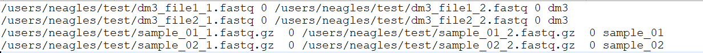

7 Manifest and Inputs
Inputs to SPEAQeasy are specified by a single file named samples.manifest. The samples.manifest file associates each FASTQ file with a path and ID, and allows the pipeline to automatically merge files if necessary.
7.1 What the Manifest Should Look Like
Each line in samples.manifest should have the following format:
- For a set of unpaired reads
<PATH TO FASTQ FILE>(tab)<optional MD5>(tab)<sample label/id> - For paired-end sets of reads
<PATH TO FASTQ 1>(tab)<optional MD5 1>(tab)<PATH TO FASTQ 2>(tab)<optional MD5 2>(tab)<sample label/id>
A line of paired-end reads could look like this:
RNA_sample1_read1.fastq 0 RNA_sample1_read2.fastq 0 sample1
- The MD5(s) on each line are for compatibility with a conventional samples.manifest structure, and are not explicitly checked in the pipeline (you may simply use 0s as in the above example).
- Paths must be long/full.
- If you have a single sample split across multiple files, you can signal for the pipeline to merge these files by repeating the sample label/id on each line of files to merge.
- A
samples.manifestfile cannot include both single-end and paired-end reads; separate pipeline runs should be performed for each of these read types.
This is an example of a samples.manifest file for some paired-end samples. Note how the first sample “dm3” is split across more than one pair of files, and is to be merged:

An example manifest for paired-end data
7.1.1 More details regarding inputs
- Input FASTQ files can have the following file extensions:
.fastq,.fq,.fastq.gz,.fq.gz - FASTQ files must not contain “.” characters before the typical extension (e.g. sample.1.fastq), since some internal functions rely on splitting file names by “.”.